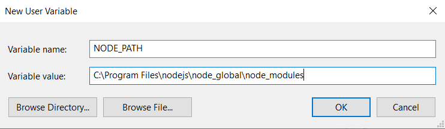
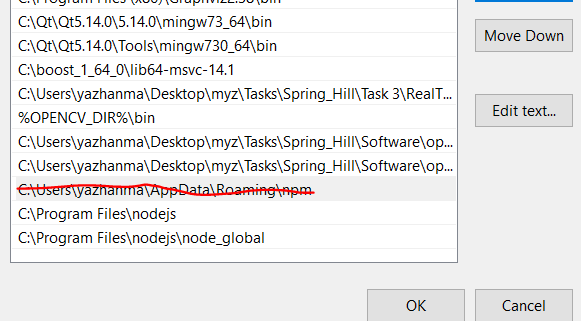

<!-- date: 2020-01-06 13:50:12 // 可以添加到上面 -->
# 1. 下载 node 安装包 (LTS 版本) https://nodejs.org/en/
运行 msi 文件默认下一步即可
# 2. cd C:\Program Files\nodejs
mkdir node_cache | |
mkdir node_global |
# 3. <font color='red'> 管理员 </font > 方式打开 cmd
npm -v | |
npm config list | |
npm config set proxy http://child-prc.intel.com:913 | |
npm config set https-proxy http://child-prc.intel.com:913 | |
npm config set prefix "C:\Program Files\nodejs\node_global" | |
npm config set cache "C:\Program Files\nodejs\node_cache" | |
npm install npm -g //将npm安装一份到刚迁移的新目录(方便后续统一管理)。 |
# 4. 配置环境变量 (注意结合自己的 node 安装位置)
・新建 NODE_PATH 环境变量，值为 C:\Program Files\nodejs\node_global\node_modules
・在 path 环境变量中加入 C:\Program Files\nodejs\node_global
NODE_PATH 环境变量是指向新的模块安装位置 (node 默认使用该环境变量，建立就行)
path 中加入的是 node 模块的启动方式目录

可以把安装 nodejs 时候自动配置的 PATH 变量 C:\Users\yazhanma\AppData\Roaming\npm 删掉

# 5. 到此 node 安装完毕，介绍下 node 的模块安装方式 (关闭 cmd 命令行并重新以管理员身份打开，让更新的环境变量生效)。
npm install 模块名 –g | |
如 #npm install -g hexo-cli， 稍等一会 |
会在如下路径找到 hexo
C:\Program Files\nodejs\node_global
C:\Program Files\nodejs\node_global\node_modules
Appendix:
设置 git 代理
git config --global http.proxy http://127.0.0.1:1080 | |
git config --global https.proxy https://127.0.0.1:1080 |
如果所用网络不需要代理，则要把 npm 代理和 git 代理去掉
1、去掉 npm 代理
npm config delete proxy | |
npm config delete https-proxy |
2、去掉 git 代理
git config --global --unset http.proxy | |
git config --global --unset https.proxy |
# FAQ(Frequently asked question)
遇到设置完 D:\nodejs\node_global 环境变量后 CMD 窗口打开输入 hexo 可用，但是 powershell 打开无法运行 hexo (D:\nodejs\node_global\hexo)
提示原因是安全 security 问题，禁止运行脚本，修改方法:
powershell 窗口打开运行如下命令:
Set-ExecutionPolicy -Scope CurrentUser | |
再输入remotesigned 即可 |